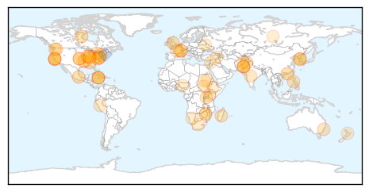
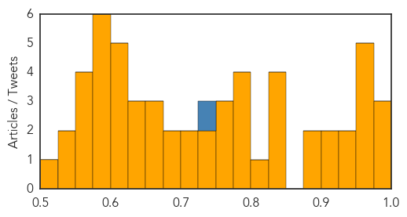

Influenza
30-Day Web Trend
7 alerts, 0 warnings

30-Day Twitter Trend
0 alerts, 0 warnings

Article Locations
Article Confidences

Top Articles:
- 1.000
- The truth about flu vaccines – The Westside Gazette
- 0.999
- Victims Crippled and Killed by the Flu Shot Compensated by U.S. Government
- 0.997
- STATE HEALTH OFFICIALS ANNOUNCE FIRST INDIANA INFLUENZA DEATH OF 2015-16 SEASON
- 0.995
- Flu vaccine effectiveness reduced by use of statins
- 0.991
- Flu shots make sense
- 0.989
- State Health Department: First flu death of season hits Indiana
- 0.987
- Studies raise questions about impact of statins on flu vaccination in seniors
- 0.985
- County hosts flu shot clinics
- 0.981
- Studies raise questions about impact of statins on flu vaccination in seniors
- 0.980
- Clinics are opening for flu season
- 0.977
- Why the CDC pushes flu season fear like clockwork: $1.6 billion in annual revenue for Big Pharma
- 0.975
- Statins could stop flu jab from working properly and put elderly at risk, scientists warn
- 0.973
- Flu season arrives; health professionals gearing up for rush
- 0.970
- Do statins reduce the effectiveness of flu jabs?
- 0.957
- Pregnant Nurse Fired For Refusing Toxic Flu Shot
- 0.945
- Influenza virus identified in European Union nations
- 0.934
- Statins may lessen impact of flu vaccination in elderly
- 0.927
- Statins could interfere with flu jab, studies suggest
- 0.925
- Flu vaccinations appear less effective for people taking statins
- 0.908
- Statins may reduce effectiveness of flu jab
- 0.848
- Today's stories from newspapers in Belleville Region
- 0.848
- Today's stories from newspapers in Caledon
- 0.800
- Today's stories from newspapers in Ottawa
- 0.785
- Today's stories from newspapers in Ottawa Valley
- 0.753
- Tuberculosis disease explodes in Australians’ favourite holiday spots, WHO report shows
- 0.751
- October 29, 2015 Archives
- 0.751
- October 29, 2015 Archives
- 0.751
- October 28, 2015 Archives
- 0.732
- Tuberculosis disease explodes in Australians’ favourite holiday spots, WHO report shows
- 0.689
- The vaccine industry's war on women
- 0.618
- Bad Science Watch: Sellers of Homeopathic Flu Remedies Spreading Lies and Misinformation
Top Tweets:
-
No tweets found for Oct 29, 2015
Unknown
30-Day Web Trend
0 alerts, 0 warnings

30-Day Twitter Trend
1 alerts, 0 warnings

Article Locations

Article Confidences
Top Articles:
- 0.998
- Korea to delay declaring itself MERS-free
- 0.997
- DC Health Unit to administer flu shots Friday
- 0.984
- Flu vaccine will be more effective this winter, says Hong Kong's health chief
- 0.973
- Probably cilantro: Over 700 sick from Cyclospora traced to Mexico, travelers edition
- 0.972
- World Health Organization Follows Up Bacon Bummer With This
- 0.970
- Statins “could harm flu fight in pensioners” say studies which claim medicines
- 0.960
- Legionnaires' Disease Outbreak at St. Joseph's Hospital in Syracuse, NY
- 0.957
- Lesson can be learned from BVD outbreak in Germany
- 0.948
- Flu vaccines now available through Humboldt County Department of Health and
- 0.935
- Last year's enterovirus D68 outbreak more widespread than first thought: study
- 0.924
- Fifth NCW person diagnosed with Legionnaires' disease
- 0.900
- Worker Tests Positive For Shigella at Restaurant Linked to...
- 0.895
- Two-thirds of people under 50 have herpes: WHO
- 0.889
- Bacteria at ‘Busta’
- 0.843
- Tuberculosis Deaths Now Rival HIV, Despite Being Curable
- 0.842
- Hospital flu-shot-or-mask policy on hold
- 0.830
- A history of rabies in St. Clair
- 0.827
- Bovine Leukosis Virus
- 0.813
- Worker Tests Positive For Shigella At Mexican Restaurant « CBS San Francisco
- 0.798
- Toronto sees spike in sick raccoons
- 0.788
- Major step towards a vaccine against a lethal disease that kills endangered tortoises
- 0.786
- Neglected area: Centres for psoriasis patients needed
- 0.783
- Australia’s largest ever farm-based outbreak of Q fever
- 0.773
- NBC29 WVIR Charlottesville, VA News, Sports and Weather
- 0.764
- It's Time to Put Teeth in Global Health Practice!
- 0.752
- Swift action to ground pigeon virus
- 0.748
- Health And Family, Lifestyle Features, The Philippine Star
- 0.725
- Sherwin-Williams Develops Bacteria-Killing Paint to Help Fight Hospital Infections
- 0.712
- Zimbabwe runs out of money to contain outbreak of Foot and Mouth disease
- 0.707
- ‘World needs Russia’, former French president Sarkozy tells Putin on Moscow trip
- 0.700
- IMA protests B.Sc course in community health
- 0.695
- Zimbabwe runs out of funds to contain outbreak of Foot and Mouth
- 0.672
- Why hasn't the US eradicated the plague?
- 0.670
- South Korea on alert as 31 hit by mystery illness
- 0.651
- ZIZ Broadcasting Corporation
- 0.649
- Antigua Observer Newspaper
- 0.642
- Republican Paul Ryan elected US House speaker
- 0.630
- At least 60 die daily of TB in Kenya, report reveals
- 0.621
- Doctors Without Borders Urge South Africa to Allow Generic Version of HIV Drugs
- 0.608
- Unity state’s main hospital out of medical supplies - South Sudan
- 0.608
- Unity state’s main hospital out of medical supplies - South Sudan
- 0.603
- Flu Clinics Set for 2015 - Story
- 0.603
- The rise of Turkey’s Demirtas, Erdogan's nemesis
- 0.593
- Flu activity mirroring 2014 where cases spiked in early December
- 0.589
- UNICEF concerned over quake-hit children in Afghan, Pak
- 0.585
- UNICEF Concerned Over Quake-hit Children in Afghan, Pakistan
- 0.582
- Namibia to introduce new polio vaccine in 2016
- 0.580
- TB 'Joins HIV as Most Deadly Infection'
- 0.578
- New ASF outbreaks raise concerns over future of Ukraine pig industry
- 0.566
- US refuses to back down over Assad as Syria talks begin in VIenna
Showing top 50 articles...
Top Tweets:
- 0.728
- MERS hospital outbreak in Hufoof Saudi Arabia is still growing. Another expat health worker infected & +1 death. https://t.co/Xx6l5Pv6PN